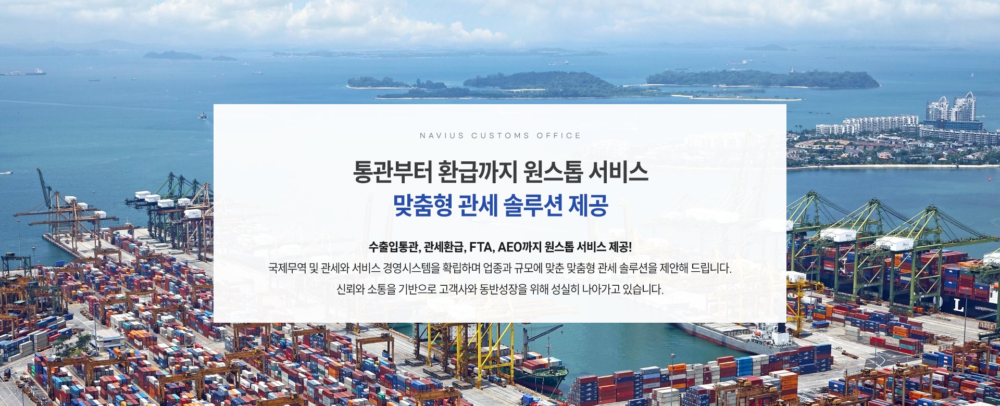
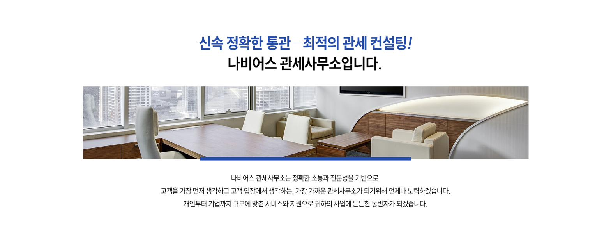
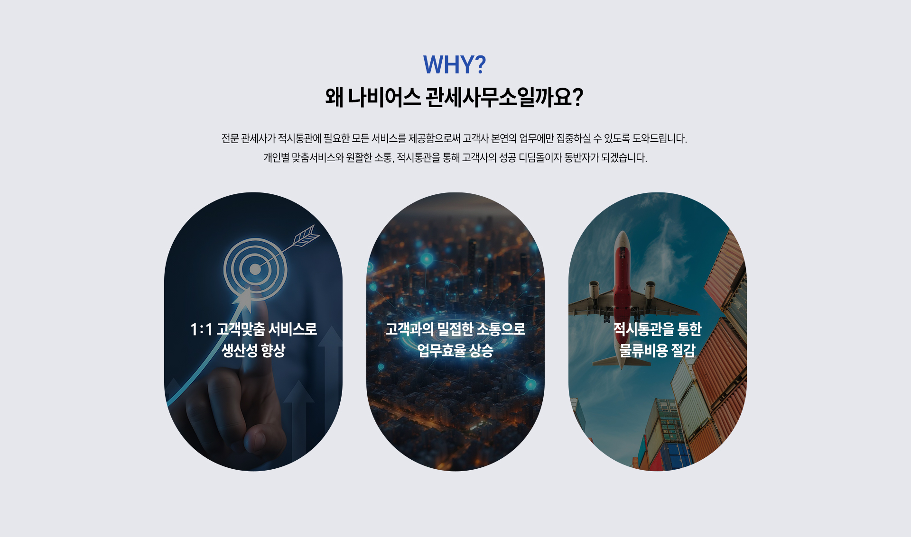

WHY?
무역이라고 하면 예전에는 회사나 기업의 영역이었지만, 이제는 누구나 쉽게 따라할 수 있는 시대가 되었습니다. 무역거래의 형태도 해외 직구, 구매대행 등 다양한 형태로 변화하고 있으며 많은 사람들이 무역인을 꿈꾸고 도전합니다.
그러나 무역을 하다 보면 다양한 리스크와 장벽, 난관을 마주치게 됩니다. 나비어스 관세사무소는 관세무역 분야 전문가로서 항상 고객의 입장에서 문제 해법을 찾기 위해 고민하겠습니다.
누구나 쉽고 안전하게 무역할 수 있는 자유무역시대, 나비어스 관세사무소가 여러분의 든든한 파트너가 되겠습니다.

MAIN SERVICES
다양한 심사경력을 보유한 전문 관세사가 관세 업무상 오류로 인한 사고를 미연에 방지하고, 컨설팅 중 발견된 사안에 대하여 솔루션 및 지속적인 피드백을 제공합니다.
수출신고 절차와 과정을 거치는 수출일련의 과정
검사, 검역, 허가, 추천증 등 요건과 세관 통관 일련의 과정
관세법과 국제협약에 의거한 세관검사, 통관 수출절차
세관검사, 수출신고필증 발급 및 신고, 통관 일련의 과정
수입적합여부 확인, 검역요건 확인부터 서류, 검사 대응까지
FTA 회원국 간 비관세영역 교역증진에 따른 안정적 컨설팅
수출로 발생한 관세를 합법적으로 환급받을 수 있도록 지원
원산지 관리와 세관 검증에 대비한 원산지증빙서류 관련 업무
"변화의 파도에도 흔들림없이 이끌겠습니다.
"
나비어스 관세사무소는 빠르게 변화하는 규정과 시장 흐름 속에서
고객사와의 신뢰를 기반으로 올바른 길을 잡아주는 방향키처럼
비즈니스의 안전한 항해를 도와드리겠습니다.
CHIEF CUSTOMS BROKER
고객을 가장 먼저 생각하며 가장 최적화된 컨설팅을 제공할 것을 약속합니다.
Chief Customs Broker